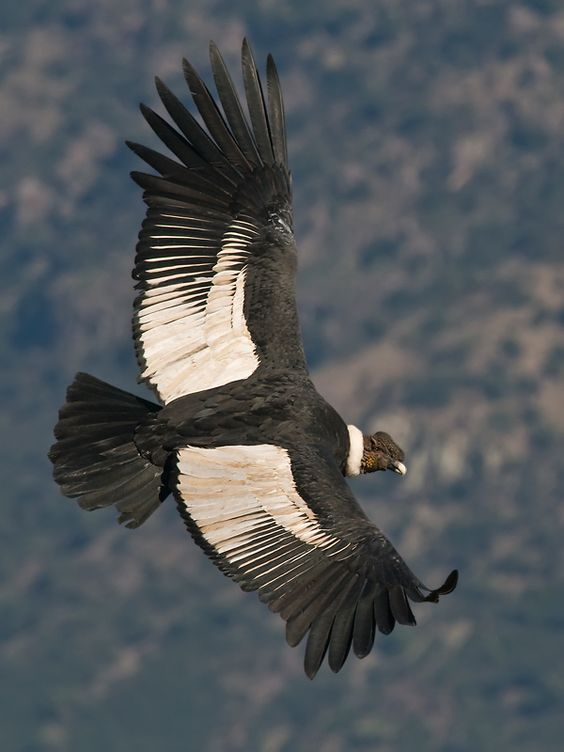

Además del emblemático e imponente volcán Lanín que con sus 3.776 metros sobre el nivel del mar domina el paisaje, el área protegida incluye unos 24 lagos. Aquí se conserva una importante muestra del Bosque Patagónico y varias especies de plantas exclusivas de la región.
EMBLEMA
Con sus cerca de 3 metros de envergadura, el cóndor andino (Vultur gryphus) es un eximio planeador que usa las corrientes térmicas del aire para remontarse a gran altura. En su plumaje negro destacan un collar y una zona blanca en el dorso de las alas. El macho posee una cresta rojiza sobre su cabeza desprovista de plumas. La hembra carece de cresta y los juveniles son pardos y sin las manchas blancas.

La araucaria o pehuén (Araucaria araucana) es una conífera que puede alcanzar los 50 metros de altura. De crecimiento muy lento, algunos ejemplares alcanzan los 1000 años. En los ejemplares más viejos, las ramificaciones se abren en altura, dándole una forma característica de sombrilla. Las hojas son muy duras, con una espina en la punta. Las semillas, llamadas piñones, son comestibles y de alto valor nutricional.